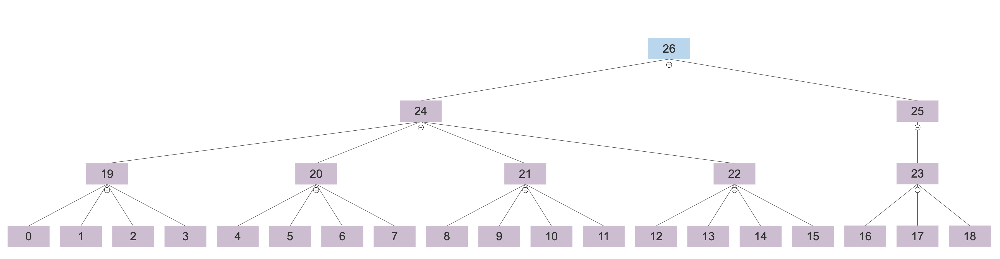
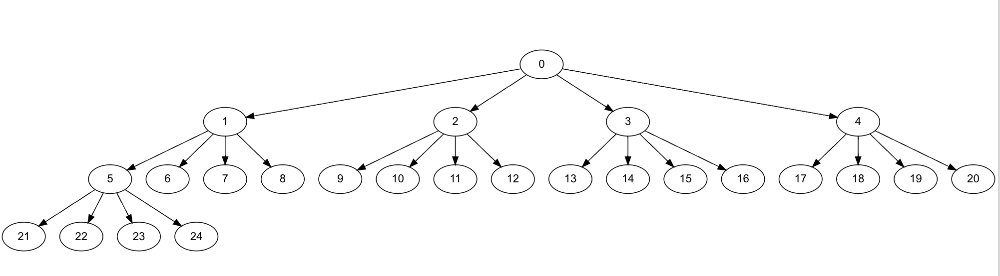

I’ve spent the last 6 months working on Spall, trying to push the limit on bigger and bigger traces, and slashing load-times to make that possible. My pie in the sky ideal is to load a 1 TB trace in a human-friendly amount of time, and display it at 60+ fps.
With the current auto-tracing format, every function eats 32 bytes, so that’d be somewhere around 32 billion events in a trace file. The maximum dump rate from the auto-tracer is around 45 million events per second per core, limited mostly by the users’s clockspeed, RDTSC implementation, and linear disk write speed.
Doing a little napkin math, 45M/s is about ~1.5 GB/s of data, so assuming it takes as long to load a file as it does to trace it, it would take ~11 minutes to generate, and another 11 minutes to load that trace. Unfortunately, we’re not quite there yet. I’ve recently made some big performance improvements to get closer to that ideal though! The old build of Spall-native manages somewhere around ~350 MB/s, the new changes I’ve made bring it to around ~650 MB/s, end-to-end.
One of the important things Spall does to make bigger traces viable to render, is the LOD (level-of-detail) tree. Spall takes the trace timeline and subdivides it into slices that can be searched quickly, so rather than scanning gigabytes of data per frame, it can jump to a subsection of the event array, and only load in the few bits and pieces that the user can see.
So, what changed to make even bigger traces possible? I did a big revamp of the LOD building system. The old system used a reverse-eyztinger-like layout with a k-ary tree, chunking the range in 4 functions per tree-leaf, and then building up parent nodes from there.
The old tree had a few 64-bit indexes to help find where each node’s children were, where each leaf’s functions started in the function array, and some flags to help determine whether a node was a leaf or not. That old tree also ate about 40% of the total trace-size in memory, just for the caching structure.
Old Explicit Tree

The new tree is far more space efficient! I’ve moved to a more implicit tree, with 32 functions per tree-leaf. The tree is now closer to a forward-ordered eyztinger tree, so we don’t need to store indexes for events and tree nodes, because they can now be computed quickly on the fly. The new setup uses about 5% of the trace size in LOD memory, so an 11 GB trace across 64 threads from GDB eats about ~550 MB of RAM for the LOD structure instead of ~5 GB.
New Implicit Tree

For more on Eytzinger Trees, Algorithmica has a solid overview.
Cliffnotes though, the big win here is that the index of the left child of a node is kn + 1, where k is the arity of the tree, (binary, ternary, 4-ary, etc.), and n is the current node’s index. So, for node 5, the left child is 4*5+1 or 21, and none of that information needs to be stored.
This along with an increase in the number of functions per leaf, did come at the cost of framerate, although with recent render-performance improvements, I had enough frame-budget to dial back RAM a bit more. Now, on my older Intel Mac, rather than running at 200 frames per second, I only get 60 fps for large (6 GB+) traces, and on beefier machines, I’m down from 400 fps to 200. What a tragedy! :P
I figure, if we’ve got the headroom, might as well use it for something worthwhile. There’s still plenty of performance improvements left on the table to make. I haven’t started working with threads yet, although I’ve been designing the ingest pipeline and renderer with threads in mind. I should be able to parallelize both rendering and loading files, which’ll give us a nice little boost because the trace data has few cross-thread dependencies, meaning it can be split across a work-pool without too much effort.